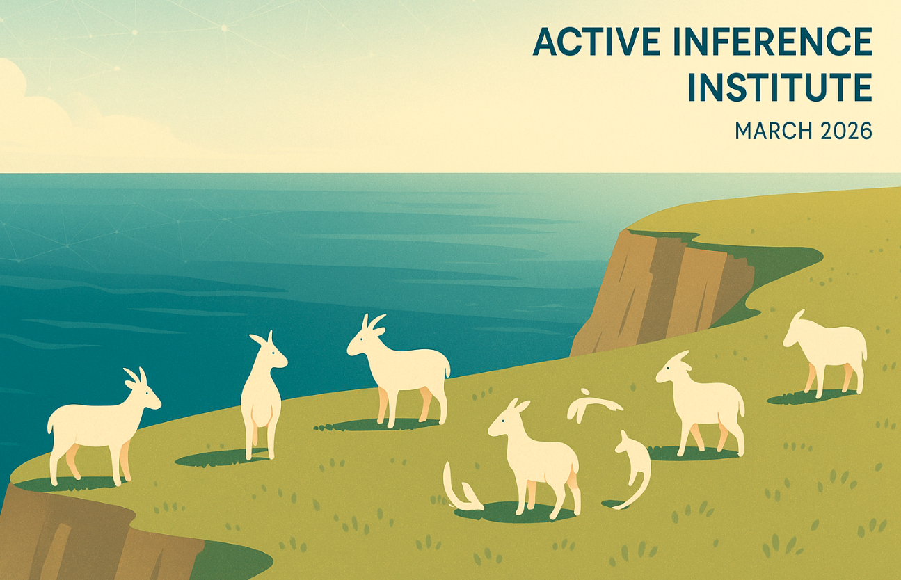

المقال الكامل
محتوى النشرة الإخبارية
هذه الصفحة تحافظ على نص النشرة الإخبارية المحفوظ، والروابط العامة، ووسائل الإعلام.
Active Inference Education Participation Research Newsletter
- Published
- Format
- Newsletter
Hello all, we have many updates to share this month, and much more upcoming for this year.
See all first quarter updates in the 2026 Quarterly Roundtable #1 from today (slides).
This Substack is reader-supported. To receive new posts and support my work, consider becoming a free or paid subscriber.
Updates from Institute Fellows
- We are pleased to announce three new Research Fellows, and their exciting projects.
Mahault Albarracin: “AI²C: Active Inference Alignment Coalition, A Multi-University Consortium for Alignment Research”
Jake Hooper: “Fractal Complexity, Predictive Processing, and Perturbation in Aesthetic Experience”
Alexander Hemming, who will be developing a comprehensive book that uses predictive processing (PP) to explain the formation of ideology from first principles.
- Robert Worden reports a new publication in Frontiers in Psychology: “The projective wave theory of consciousness”
- Hongju Pae is currently advancing Phase 2 of the Perspective Architectures for Coherent and Attuned Artificial Agency study. Thanks to your generous support, we raised a total of $20,255 through last month’s crowdfunding campaign - thank you! At the upcoming AAAI 2026 Spring Symposium - Machine Consciousness, they will present findings from Phase 1 of the study on April 8. We look forward to seeing you there!
Updates from Projects and the Ecosystem
- Bert de Vries reports: I taught some lectures on Active Inference at the machine learning summer school in Melbourne. All the lecture materials are available online here, there is also a LinkedIn post about the course here.
- The Artificial Sentience project (Cleber Gomes) reports a new blog post on Phasic Dopamine, Cue Sensitization, and the Emergence of Addiction: A Computational Exploration.
- Call for submissions is open for the 7th International Workshop on Active Inference (IWAI). The workshop will take place in the Spanish National Research Council, Madrid, Spain, from 14-16 October, 2026.
https://iwaiworkshop.github.io/
- Conor Heins announces the release of pymdp 1.0.0. Watch the upcoming ModelStream #007.3 to learn more. See the Code, Docs, and Release notes.
- Daniel Friedman reports a new publication “A template/ approach to Reproducible Generative Research: Architecture and Ergonomics from Configuration through Publication”, with accompanying InferAnt Stream #018.1, all code is available here.
Some highlight livestreams from the last month included:
- ModelStream #021.1 with Melih Kandemir on Distributional Active Inference
- GuestStream #127.1 with Borjan Milinković and Jaan Aru
On biological and artificial consciousness: A case for biological computationalism
- If you would like to help make audio-visual content with the Institute, there are many roles available, for example to help plan livestreams. See this video for more information.
This page gives a 1-page summary of the structure of the Institute — a helpful entry point for those who are new, or learning about our (growing) organizational morphology. Donate to the Institute to support our impact and sustainability.
Here is the entry point for 2026, and ways to get involved with the Institute and Ecosystem this year. Contact us with other philanthropic and grant ideas.
Get in touch if you have general or specific feedback, ideas, or questions for the Institute.
Complete a Measurement form to have your research, education, and work updates included in a future newsletter.
More to come! Stay tuned via the newsletter and Discord.
Both with Certainty and Uncertainty,
Officers, Alexandra & Daniel
👣👣

This Substack is reader-supported. To receive new posts and support my work, consider becoming a free or paid subscriber.